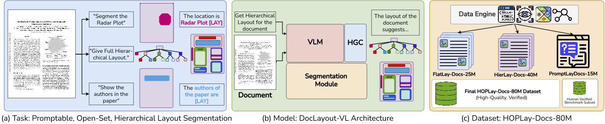
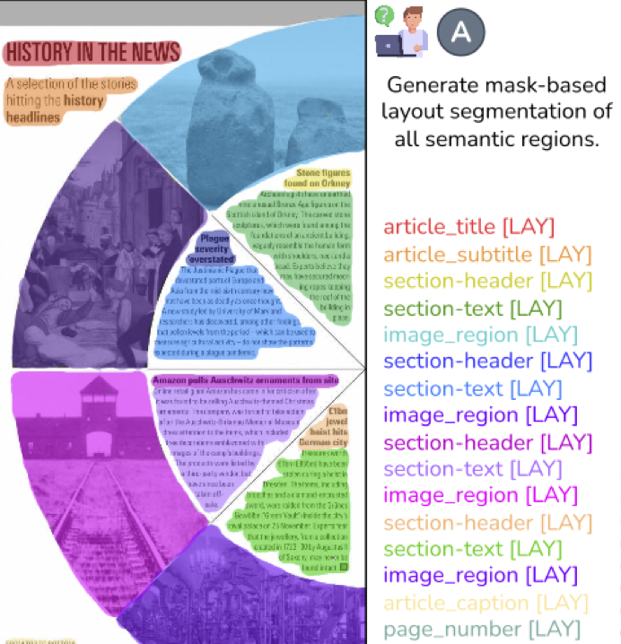
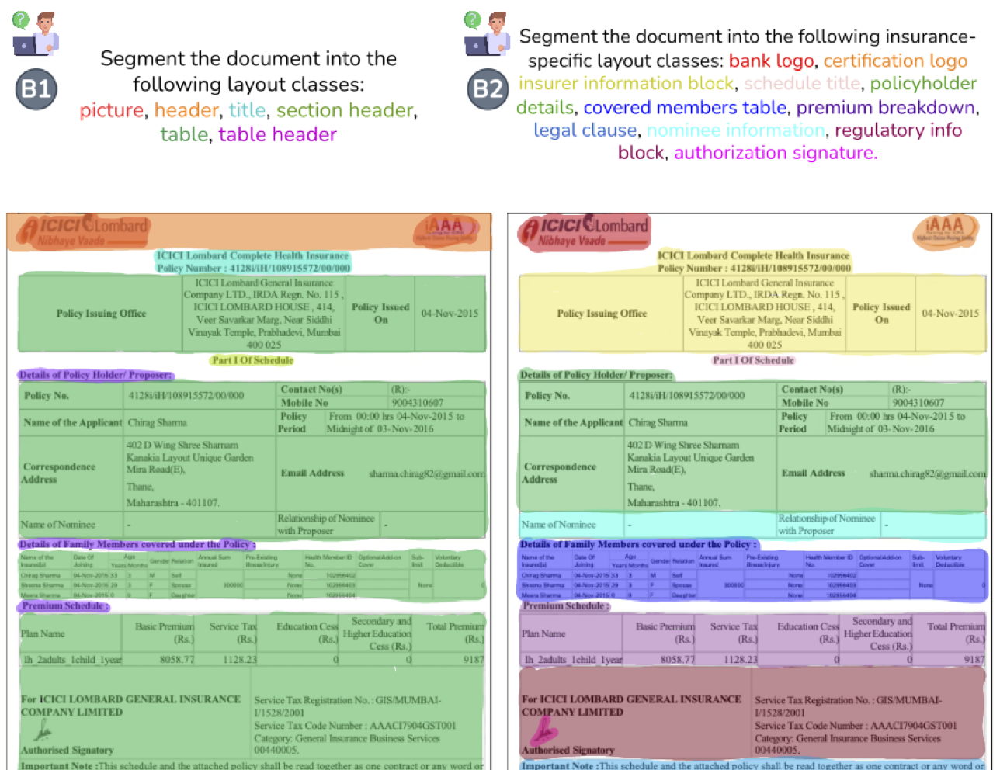
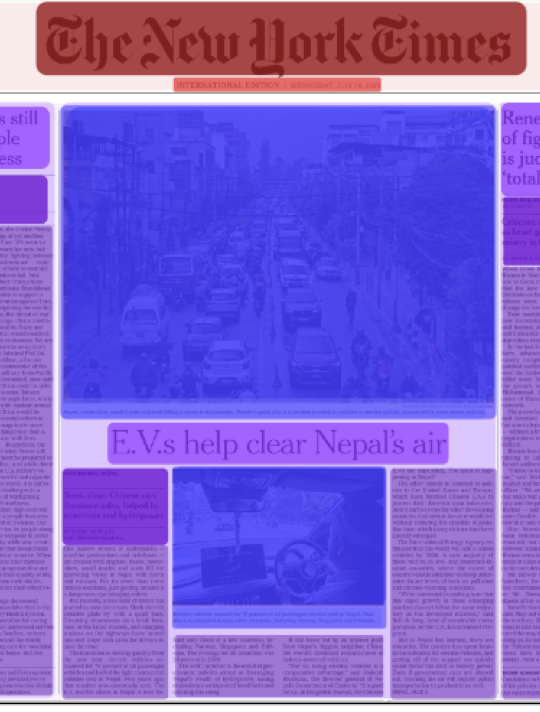
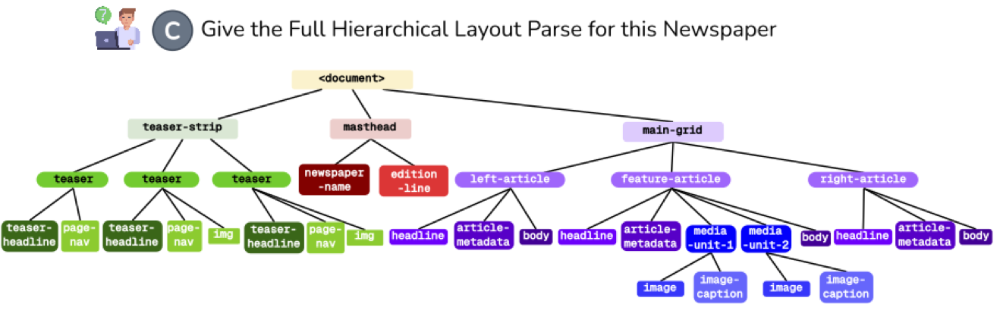
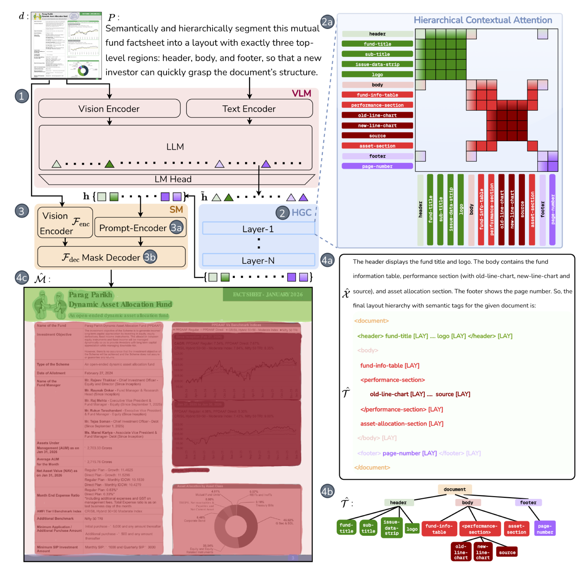
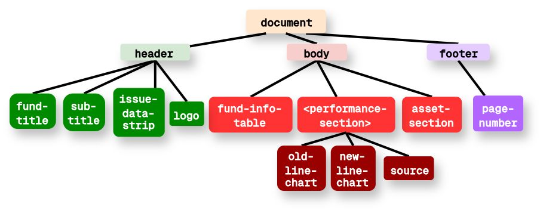
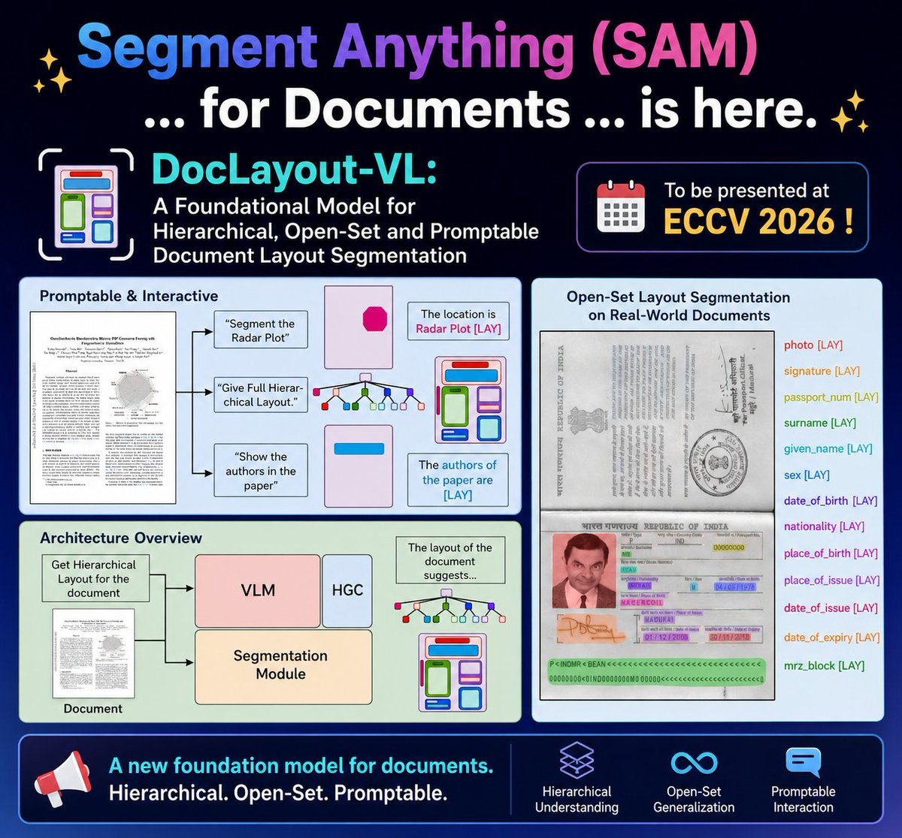

DocLayout-VL
A Foundational Model for Hierarchical, Open-Set and Promptable Document Layout Segmentation
Venkata Kesav Venna* · Srihari Bandarupalli* · Anirudh Srinivasan* · Raghuveer R · Sai Madhusudan Gunda · Ravi Kiran Sarvadevabhatla
* equal contribution · BharatGen · IIIT Hyderabad · doclayoutvl.github.io
From grounding answers… to grounding the entire page
Document layout analysis today:
fixed classes
every page forced into 5–74 predefined classes
flat layout detection
no hierarchy — sections, headings, text all peers
box detection
axis-aligned boxes misrepresent curved text, wrapped columns, circular charts

fθ(d, P) → (Tˆ, Mˆ, Xˆ) page + prompt → tree, masks, optional explanations

A · masks
every region gets a pixel-accurate mask — even a donut-shaped magazine spread

B · open-set labels
the same policy parsed with generic classes (B1) or insurance-specific ones — "premium breakdown", "authorization signature" (B2). The prompt defines the vocabulary.
Task C — the page as a hierarchy tree


"Give the full hierarchical layout parse for this newspaper" → a layout tree Tˆ = (Vˆ, Eˆ): teaser-strip, masthead and main-grid, down to headlines, media units and image captions.
Task D — promptable parsing
A serialized layout tree, interleaved with [LAY] tokens
heading[LAY]
paragraph[LAY]
paragraph[LAY]
</section>[LAY]
The generated sequence directly encodes the hierarchy: leaves as label[LAY], parent nodes closed by </tag>[LAY]. Each [LAY] token corresponds one-to-one with a spatial region; labels come from the prompt-defined vocabulary.
Architecture

DocLayout-VL in action
The loss function
Containment
a child's mask is penalized wherever it leaves its parent's
Sibling non-overlap
siblings can't claim the same pixels
𝓛bg — no mask may spill into whitespace outside the page's ground-truth foreground.
A three-stage curriculum
HOPLay-Docs-80M — layout supervision at foundation scale
Engine: VLM page reconstruction → detector relabeling → SAM3 pixel masks → Set-of-Mark instruction data → VLM + LLM verification.
HOPLay-Docs-Bench: 5,000 docs · 51,241 regions, human-verified · four tracks (flat / hierarchical / curved / promptable) · OS = mean of track averages.
Splits mirror the curriculum: FlatLay-Docs-25M · HierLay-Docs-40M · PromptLay-Docs-15M (5M instruction annotations)
Doubling the best zero-shot VLM
HOPLay-Docs-Bench · Overall Score
mean of the four track averages · 0–100
Per track, 8B (Om · cI for promptable)
flat 86.7 · hierarchical 77.5 · curved 87.9 · promptable 70.2 (G-Eval 87.2)
Zero-shot closed-set (mAP@50:95)
PubLayNet 96.5 · M6Docs 76.9 · IndicDLP 77.5 — competitive with dedicated detectors trained per-dataset
Architecture beats data scale
Overall score vs training-data fraction (Qwen3-VL-8B)
Layout as a queryable interface


Built by


Thank you — questions?
DocLayout-VL (ECCV 2026)
BharatGen · IIIT Hyderabad